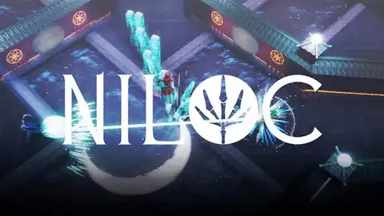
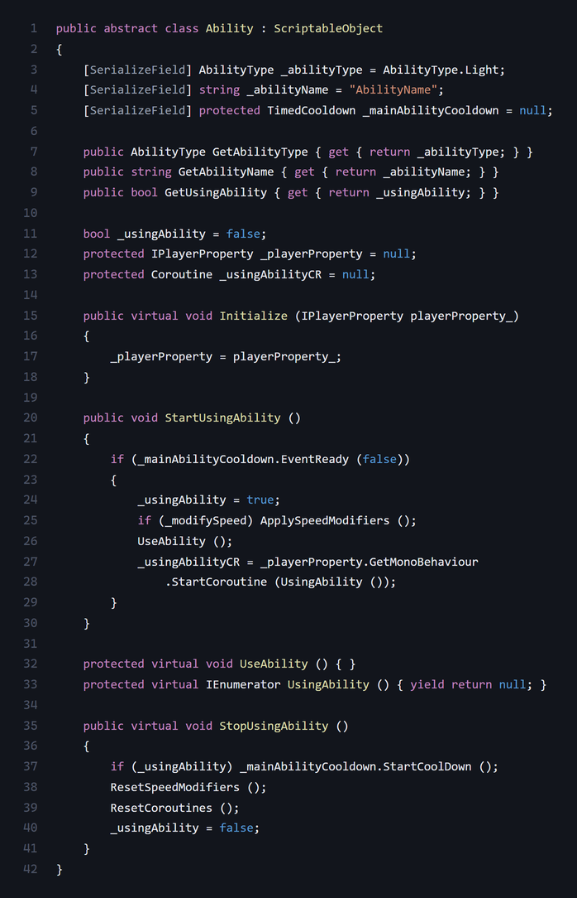
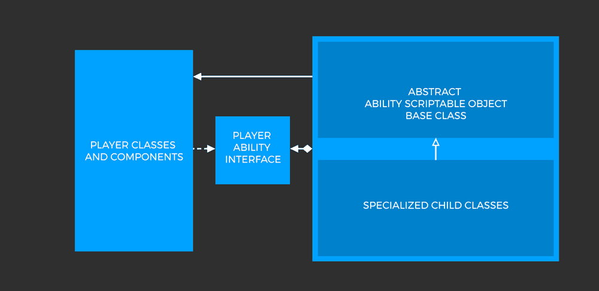
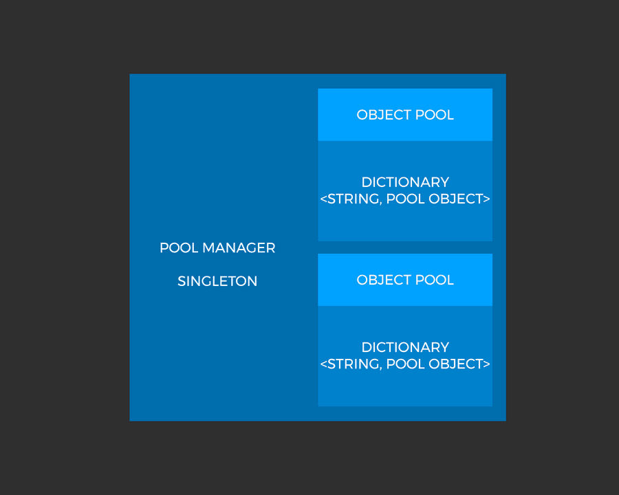
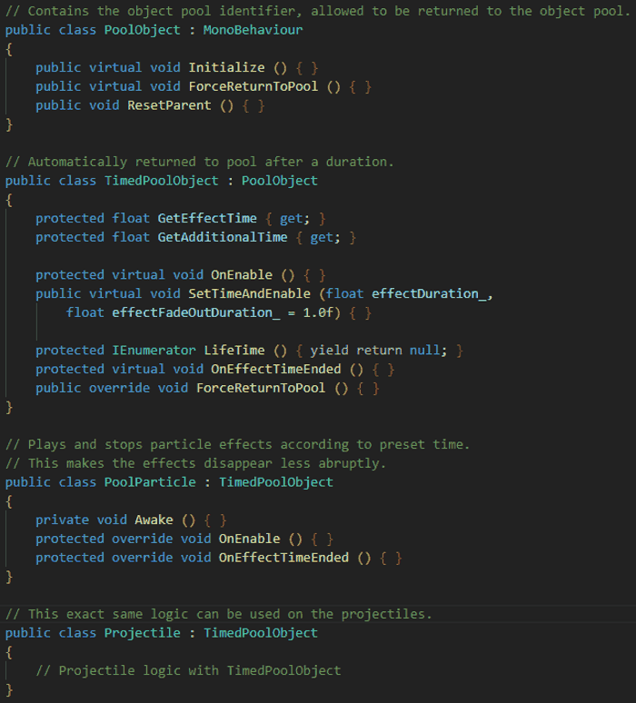
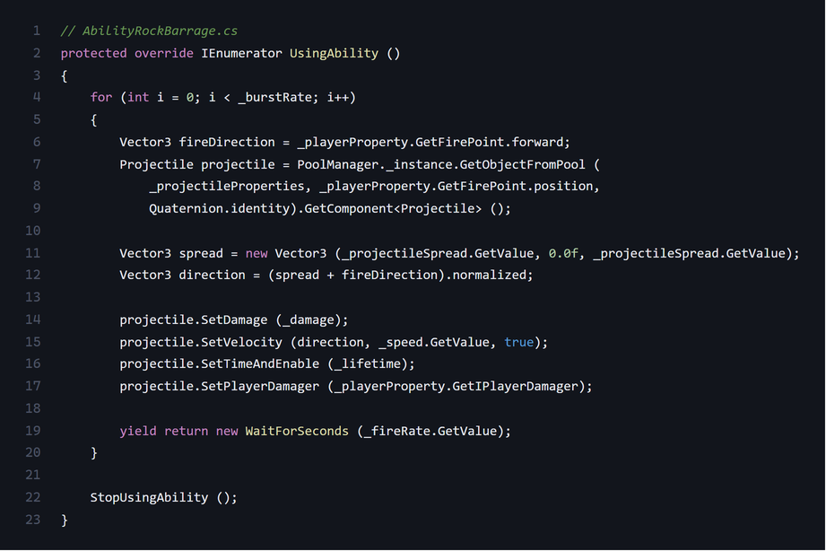

Niloc
For my final year university project, our team built Niloc: a 2–4 player local multiplayer game with elements similar to the MOBA genre (think DOTA 2). Rather than picking a character with a fixed kit, players choose their abilities from four selectable sets and mix and match to whatever playstyle suits them.

The Team
Core team
- Riley Clarke — Programmer / Project Manager
- Scott Foey — Designer
- Stephen Ogbeiwi — Designer
- Alex Murphy — Designer
- Tom Broughton — Artist
Outsourced
- George Bailey — Concept Artist
- Kyle Harmieson — Audio Designer
- Lewis Kellet — Music Composer
I led as project manager and programmer, working in C# alongside Odin, DOTween, Rewired, FMOD, Cinemachine, and a handful of minor plugins. The game was built on Unity 2018.3's High Definition Render Pipeline.
The Ability Framework
This was the single most important task on the project. It needed to be extensible — supporting a growing roster of new abilities — flexible, so abilities weren't restricted in unforeseen ways, and easily balanceable, since any multiplayer game lives or dies on how quickly designers can tune numbers.
After some research, I found an approach structured around Scriptable Objects aimed at MOBA-style games — a close match for what we needed — and adopted it as the base of our ability system.

The class is abstract, forcing every ability to derive from it, with properties used to enforce better encapsulation.

Player and ability communicate through an interface, holding to the interface segregation principle — which made it far easier to debug and control exactly what data passed between the two.
The Abilities
Twelve abilities shipped in the final game, covering damage, crowd control, buffs/debuffs, and support.

Rock Barrage
Cast a barrage of rocks towards the enemy.

Ice Shard
Cast an ice shard that damages and slows the enemy on impact.

Fire Breath
Cast a damaging cone in front of you while speeding you up.

Dash
A generic dash ability — what more do you want?

Heal
Cast a burst heal that heals both you and your teammates.

Shield
Cast an aura around yourself that protects you from all damage.

Lightning Beam
A shot of concentrated lightning for massive damage at great distance.

Electric Stream
A deadly burst of electricity in a cone at medium range.

Ice Wall
Spawns a wall of ice that deals damage on spawn.

Charge
Charge forward, dealing damage and knocking back enemies.

Fire Heart
Cast an aura of fire around yourself, dealing massive damage.

Siege
Channel arcane power, then cast a mighty strike upon your foes.
The Object Pooling Framework
Abilities needed a pooling system, both for performance and for a consistent, aesthetically clean way to spawn and despawn effects — for example, waiting for a particle effect to finish before disabling it, and correctly resetting state when it's re-enabled.

A PoolManager singleton owned multiple object pools,
keeping every type of poolable object organized — pool particles
being one example.

Projectiles and particle effects shared functionality and both
returned to the pool automatically after their lifetime, callable from
anywhere via the PoolManager.

This made for a strong framework — abilities could be prototyped and iterated on very quickly, which made balancing far easier.

Every variable was exposed in the inspector, letting us rapidly test and balance changes on the fly.
The ability system turned out flexible enough to switch render pipelines and swap the player for physics-based vehicles, as shown above — though some physics-heavy abilities like Charge needed extra tuning to behave.
Ability Framework: Evaluation
I'm happy with how the framework turned out overall, though one change would have made it significantly better. Right now, each player instances their own copy of an ability on spawn, so edits to the ability asset don't immediately affect players at runtime. A better approach would look up the shared ability asset directly, separating its logic and enabling real-time balancing — a simple-sounding refactor that would have reset most of the tuned inspector variables, so it stayed on the "next time" list.
Tool Development: Complex Collider
I built a tool called Complex Collider to make the asset pipeline less tedious for the team, inspired by Unreal Engine's FBX static mesh pipeline, where a mesh can be turned into a primitive/convex collider automatically.

Colliders were originally built by hand — slow and tedious for the designers. The tool takes a mesh and generates all of its colliders automatically, named identically to Unreal's convention, straight from the mesh's own name.
We'd originally hoped to release on Steam but decided to stay on itch.io for now — you can play Niloc here. A code showcase is also up on GitHub — the full project isn't public since it depends on commercially licensed third-party plugins.